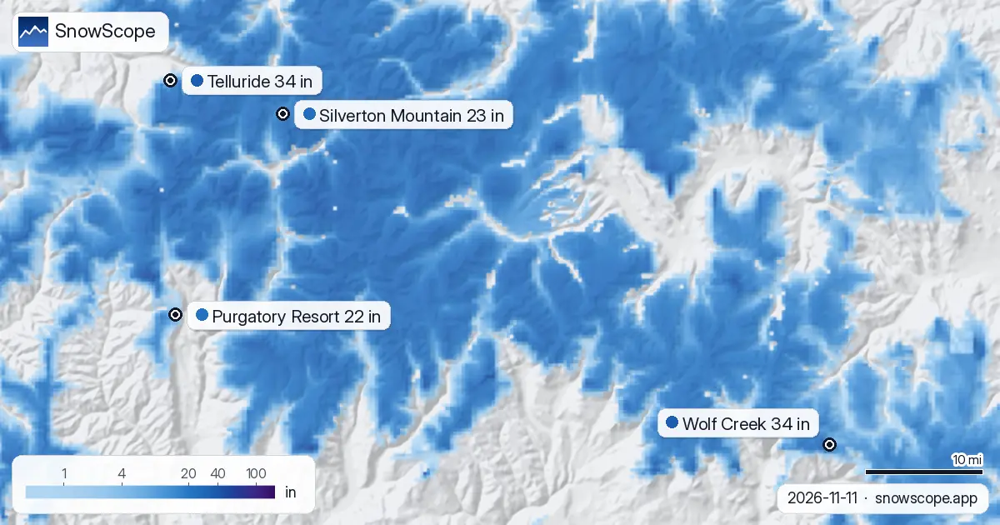

Neve a Silverton Mountain rispetto all'anno scorso: 31 in oggi, 0 in un anno fa (11 novembre)
C'è più neve di un anno fa? Abbiamo confrontato oggi con il 11 novembre dell'inverno scorso in 4 località nell'Ovest degli USA: 4 hanno più neve ora, secondo il nostro modello neve. La differenza maggiore è a Silverton Mountain: 31 in (79 cm) oggi contro 0 in (0 cm) un anno fa. I satelliti non si stancano mai, ma le nuvole sì che le trovano.
Le previsioni neve in tempo reale per Wolf Creek nell'app SnowScopeAltezza neve, allerte powder e mappa 3D, gratis.
Località per località
Wolf Creek a 11.010 ft (3.356 m): 26 in (66 cm) adesso, più che i 0 in (0 cm) del 11 novembre dell'inverno scorso. Abituale per la data: 8 in (20 cm).
Telluride, 10.620 ft (3.237 m): 8 in (20 cm) oggi, più che i 0 in (0 cm) del 11 novembre dell'inverno scorso. Il valore abituale per questa data: 9 in (24 cm).
Silverton Mountain a 10.643 ft (3.244 m): 31 in (79 cm) adesso, più che i 0 in (0 cm) del 11 novembre dell'inverno scorso. Abituale per la data: 7 in (17 cm).
Purgatory Resort, 9.820 ft (2.993 m): 4 in (10 cm) oggi, più che i 0 in (0 cm) del 11 novembre dell'inverno scorso. Il valore abituale per questa data: 6 in (14 cm).
| Località | Altezza neve | Neve fresca, 72 h | In arrivo, prossimi giorni | Quota max |
|---|---|---|---|---|
| Wolf Creek | 34 in (87 cm) | 0 in (0 cm) | 3 in (8 cm) | 11.762 ft (3.585 m) |
| Telluride | 34 in (86 cm) | 0 in (0 cm) | 4 in (9 cm) | 12.507 ft (3.812 m) |
| Silverton Mountain | 23 in (58 cm) | 0 in (0 cm) | 3 in (7 cm) | 10.974 ft (3.345 m) |
| Purgatory Resort | 22 in (57 cm) | 0 in (0 cm) | 5 in (12 cm) | 10.797 ft (3.291 m) |
Controllo stazioni
Misurato: la stazione Wolf Creek Summit (10.928 ft (3.331 m), a 2.0 km da Wolf Creek) segna 20 in (51 cm) oggi e aveva 1 in (3 cm) il 11 novembre dell'inverno scorso.
Misurato: la stazione Alta Lakes (11.289 ft (3.441 m), a 3.5 km da Telluride) segna 19 in (48 cm) oggi e aveva 3 in (8 cm) il 11 novembre dell'inverno scorso.
Misurato: la stazione Red Mountain Pass (11.060 ft (3.371 m), a 5.3 km da Silverton Mountain) segna 23 in (58 cm) oggi e aveva 0 in (0 cm) il 11 novembre dell'inverno scorso.
Misurato: la stazione Cascade #2 (8.990 ft (2.740 m), a 4.1 km da Purgatory Resort) segna 0 in (0 cm) oggi e aveva 0 in (0 cm) il 11 novembre dell'inverno scorso.
La stazione Beartown (11.581 ft (3.530 m)) ha misurato 30 in (76 cm) il 10 novembre.
La stazione Bison Lake (10.951 ft (3.338 m)) ha misurato 14 in (36 cm) il 10 novembre.
Da dove viene la differenza
Il conteggio del nostro modello per Wolf Creek quest'inverno: 1 giorni con un aumento di 4 in (10 cm) o più, 0 giorni con una perdita di 2 in (5 cm) o più per fusione, pioggia o vento.
Telluride quest'inverno: 0 giorni con un aumento di 4 in (10 cm) o più, 0 giorni con una perdita di 2 in (5 cm) o più (fusione, pioggia, vento).
Il conteggio del nostro modello per Silverton Mountain quest'inverno: 1 giorni con un aumento di 4 in (10 cm) o più, 0 giorni con una perdita di 2 in (5 cm) o più per fusione, pioggia o vento.
Gli scarti d'inizio stagione sono soprattutto rumore: li decide una perturbazione in più o in meno, e prevedono poco del resto dell'inverno.
L'inverno scorso in cifre
Wolf Creek, inverno scorso (2025-26): massimo 30 in (76 cm) il 21 febbraio, stessa quota.
Telluride: il massimo dell'inverno scorso (2025-26) è stato 30 in (76 cm), il 21 febbraio, a questa quota.
Silverton Mountain, inverno scorso (2025-26): massimo 20 in (51 cm) il 21 febbraio, stessa quota.
Consigli per sciatori
- Un inizio migliore dell'anno scorso non è una promessa per le vacanze: segui la previsione, non solo la neve già a terra.
- I valori del modello descrivono un'area a una quota; una stazione misura un punto. Leggi entrambi prima di decidere.
- Neve sulla mappa non significa località aperta: controlla impianti e date sul suo sito.
- Prima di ogni uscita in fuoripista o scialpinismo leggi il bollettino valanghe ufficiale (link qui sotto).
Su questi numeri
Le altezze neve delle località sono la neve più alta sui pendii superiori secondo il modello neve di SnowScope (circa 1 km, calcolo del 11 novembre); sono stime per un'area, non una misura in un punto. I valori delle stazioni sono misure alla data indicata. Le previsioni possono cambiare. Leggi sempre il bollettino valanghe ufficiale prima del fuoripista.
Bollettini valanghe ufficiali: avalanche.org
Cita questo articolo
Per ricerca, didattica o stampa: numeri e grafici sono liberamente riutilizzabili con licenza CC BY 4.0 citando così.
SnowScope (2026), Neve a Silverton Mountain rispetto all'anno scorso: 31 in oggi, 0 in un anno fa (11 novembre), https://snowscope.app/blog/it/2026/11/us-west-snow-this-season-vs-last-season-11-november-2026.html, consultato il 2026-11-11
SnowScope (Atlas Labs). (2026, November 11). Neve a Silverton Mountain rispetto all'anno scorso: 31 in oggi, 0 in un anno fa (11 novembre). SnowScope snow reports. https://snowscope.app/blog/it/2026/11/us-west-snow-this-season-vs-last-season-11-november-2026.html
BibTeX
@misc{snowscope2026uswestsnowthisseasonvsla,
author = {{SnowScope (Atlas Labs)}},
title = {Neve a Silverton Mountain rispetto all'anno scorso: 31 in oggi, 0 in un anno fa (11 novembre)},
year = {2026},
month = nov,
howpublished = {\url{https://snowscope.app/blog/it/2026/11/us-west-snow-this-season-vs-last-season-11-november-2026.html}},
note = {Published 2026-11-11 18:44 UTC; accessed 2026-11-11}
}· CC BY 4.0 · Metodi, dati e strumenti →
Wolf Creek: neve e temperatura per quota, quest'inverno vs lo scorso (strumenti) →
Segui Wolf Creek
Gratis: un messaggio quando arriva la neve e il meteo ogni mattina.